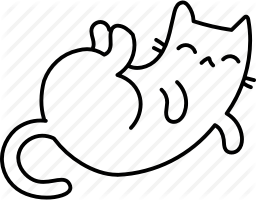

fundraiser
Menu
Menu
Home
Ipsum veroeros
Tempus etiam
Consequat dolor
Elements
有和我們合作的基金會
如下～
我們的區塊鏈標榜去中心化，能夠接受此的基金會並不多，因此我們將他們放上榜以茲鼓勵
Fundraiser of helping the weak and the poor
扶弱濟貧基金會
Fundraiser of bear
熊熊基金會
fundraiser of dust storm
塵暴基金會

fundraiser of reindeer
馴鹿基金會
Go Back